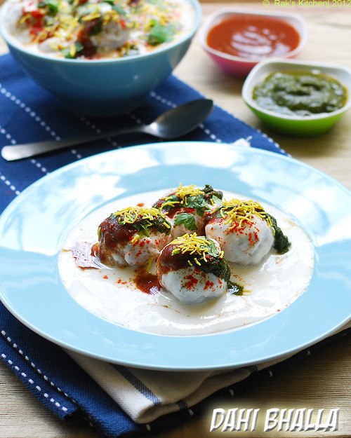

Dahi Vada

Description
Dahi Vada (Also called Dahi Bhalla in north) is Fluffy, tender, soft, tangy and sweet.
They are a combination of all your favorite flavors and textures in one tasty snack. They consist of homemade
fried lentil dumpling fritters, dunked in creamy whipped yogurt and topped with both spicy and sweet chutneys.
Dahi means plain yogurt. Vada is deep fried lentils batter. Deep fried vadas are soaked in hot water and added
to a slightly sweetened yogurt. Top it with green chutney and sweet chutney. Refer ingredients for the recipes.
Why I soak in milk not in water?
It makes dahi vada more tasty and balanced. If the curd it too sour, it is not balanced. So instead of soaking in
hot water, I soak in hot milk and avoid sweetening the curd as they usually do.
Ingredients
- 1/2 cup Urad Dal whole
- 1/2 cup curd
- 3/4 cup milk
- 2 teaspoon green chutney
- 2 tablespoon red chutney
- 1 tablespoon coriander leaves chopped
- 1/2 teaspoon red chilli powder
- 1/2 teaspoon chaat masala
- Salt
- 1/2 inch ginger
- 1 green chilli
- Sev for topping
Steps
-
Wash and soak Urad Dal firstly for 3 hours. Grind it with ginger, green chilli with very little ice cold
water.
-
Grind until smooth and fluffy. Mix with salt only when you are going to deep fry.
-
Wet your hands and make small lemon sized balls.
-
Deep fry in hot oil in medium flame until golden color on all sides
-
Flip in between for even cooking. Use paper towels to drain.
-
Heat milk until its hot but not boiling. Take it in a wide bowl.
-
Add little bit of salt and dunk in fried vadas
-
Soak for 20 minutes or so. Do turn over carefully in between.
-
Beat curd until smooth.
-
Soak Vada in milk for balanced taste. If you feel milk is more, drain it and mix required amount in curd
until runny (but still thick) consistency.
-
Add the curd to soaked Vadas. Mix required amount of salt and keep it soaked in fridge for 1/2 hour
-
Top with whisked plain yogurt
-
At the time of serving, arrange in plate, sprinkle green chutney, red chutney, coriander leaves,
red chilli powder, chaat masala and lastly sprinkle some sev or boondi, pomegranates.